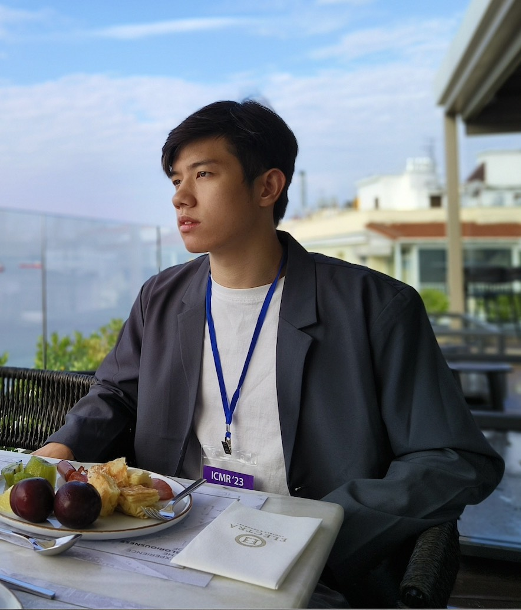

|
Jiancheng Pan 潘 建成
I' m a second-year master student at the Institute of Computer Vision of Zhejiang University of Technology
under the supervision of Dr. Qing Ma and Prof. Cong Bai.
At the same time, I am a visiting student at the Department of Earth System Science at Tsinghua University with Prof. Xiaomeng Huang.
Before that, I received the B.E. degree from Jiangxi Normal University in 2022, under the supervision of Prof. Aiwen Jiang.
My research interests include but are not limited to Computer Vision (CV), Vision-Language Models (VLMs), and AI for Science (AI4S).
CV /
Email /
Google Scholar
/
Github /
Photography
|

|
|
News
Oct, 2023: Awarded the National Scholarship (Top 0.2%).
Jul, 2023: One paper is accepted by ACMMM 2023.
Apr, 2023: Successfully apply for ICMR Travel Award.
Apr, 2023: One paper is accepted by ICMR 2023.
|
|
Publications
Keywords: Cross-modal Retrieval, Vision-Language Models, Remote Sensing.
|
|
|
PIR-CLIP: Remote Sensing Image-Text Retrieval with Prior Instruction Representation Learning
Jiancheng Pan,
Muyuan Ma,
Qing Ma,
Cong Bai,
Xiaomeng Huang.
Under Review, 2024
bib |
pdf
PIR-CLIP, a domain-specific CLIP-based method with prior instruction representation learning, is proposed to improve open-domain remote sensing image-text retrieval performance further.
|
|
|
A Prior Instruction Representation Framework for Remote Sensing Image-text Retrieval
Jiancheng Pan,
Qing Ma,
Cong Bai †.
ACM International Conference on Multimedia (ACMMM), 2023, Oral
bib |
pdf |
slide |
code
A prior instruction representation framework PIR for remote sensing image-text retrieval, aimed at remote sensing vision-language understanding tasks to solve the semantic noise problem.
|
|
|
Direction-Oriented Visual-semantic Embedding Model for Remote Sensing Image-text Retrieval
Qing Ma,
Jiancheng Pan,
Cong Bai †.
Under Review, 2023
bib |
pdf
A novel remote sensing image-text retrieval model DOVE to solve the problem of visual-semantic imbalance and strengthen the association between vision and language.
|
|
|
Reducing Semantic Confusion: Scene-aware Aggregation Network for Remote Sensing Cross-modal Retrieval
Jiancheng Pan,
Qing Ma †,
Cong Bai.
ACM International Conference on Multimedia Retrieval (ICMR), 2023, Oral
bib |
pdf |
code
A novel scene-aware remote sensing cross-modal retrieval network SWAN to reduce semantic confusion by improving the fine-grained perception of the scene.
|
|
|
Deliberation on object-aware video style transfer network with longshort temporal and depth-consistent constraints
Yunxin Liu,
Aiwen Jiang †,
Jiancheng Pan,
et al.
Neural Computing and Applications, 2021 [IF: 6.0]
bib |
pdf
An efficient video style transfer algorithm that utilizes salient object-awareness and depth consistency to achieve real-time processing, high rendering quality, and coherent stylization.
|
|
Honors
AAIA Outstanding Contribution in Reviewing Award, 2023
National Scholarship (Top 0.2%, Ranking 1/615), 2023
ICMR Travel Award (2000$, Greece), 2023
2nd Place for China Postgraduate Mathematical Contest in Modelling (13.36% award rate), 2023
National Encouragement Scholarship, 2019
|
|
Experiences
Visiting Student at Tsinghua University , 2023 -
Master Student at Zhejiang Univeristy of Technology , 2022 - (2025)
Bachelor Student at Jiangxi Normal University , 2018 - 2022
|
|
Services
Reviewer for proceedings: AAIA 2023, ICMR 2024
Reviewer for Information Fusion (INFFUS)
Teaching Assistant for C++ Programming, Spring 2023
Teaching Assistant for Python Programming, Autumn 2022
|
|